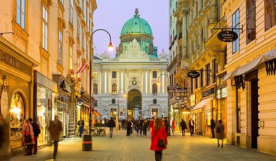
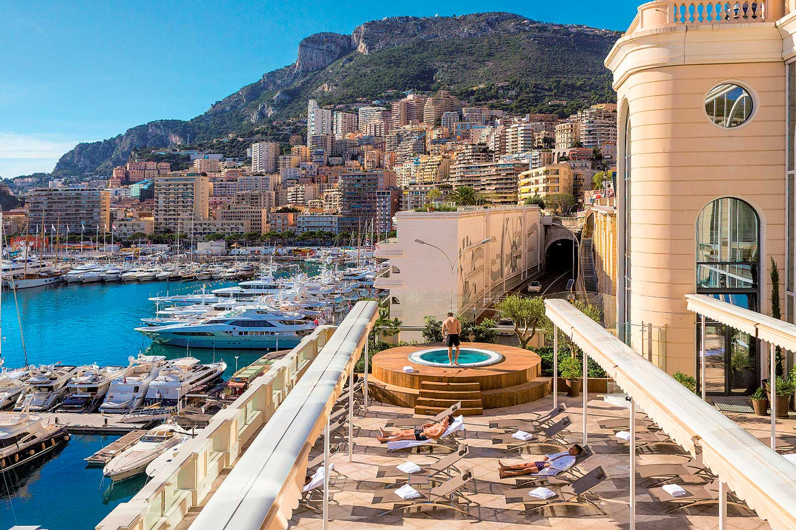

Of all the places I’ve visited, Barcelona stands out as my absolute favorite. The city’s stunning
architecture, rich history, and vibrant culture create an unforgettable experience. Walking through the
streets, I was captivated by the whimsical designs of Antoni Gaudí, particularly the Sagrada Família and
Park Güell, which showcase a blend of creativity and architectural genius.
Barcelona's cultural scene is equally impressive. From the lively atmosphere of La Rambla to the serene
beauty of the Gothic Quarter, there’s always something exciting to explore. I particularly enjoyed the local
cuisine, with its delicious tapas and traditional Catalan dishes that added a delightful culinary layer to
my visit.
The city's blend of historical charm and contemporary vitality makes Barcelona a place I dream of returning
to. The Mediterranean climate and the beautiful beaches add to its appeal, making every moment there feel
like a perfect holiday. Barcelona, with its unique charm and vibrant energy, has left a lasting impression
on me, making it my favorite destination.
Vienna
I have visited Vienna, and it quickly became one of my favorite places. The city's stunning architecture and rich cultural history left a lasting impression on me.
Venice
I have visited Venice, and its unique charm captivated me instantly. The picturesque canals and historic architecture made my time there truly unforgettable.

Monte Carlo
I have visited Monte Carlo, and its elegance and sophistication left a lasting impression on me. The luxurious atmosphere and stunning views were absolutely breathtaking.
